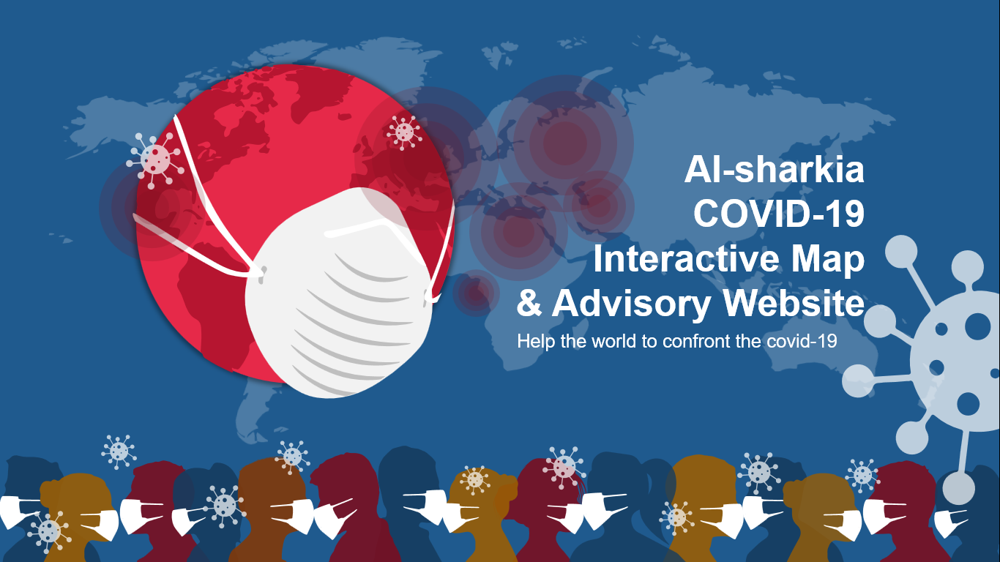
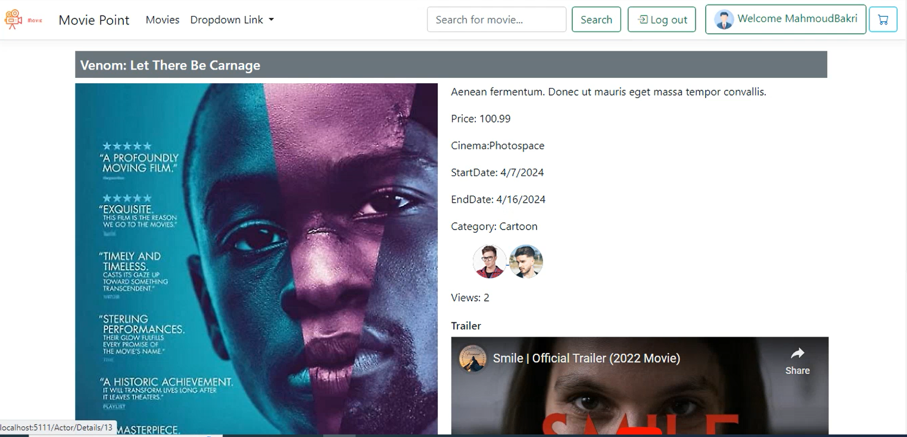
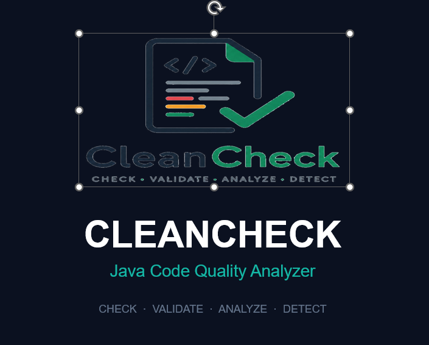
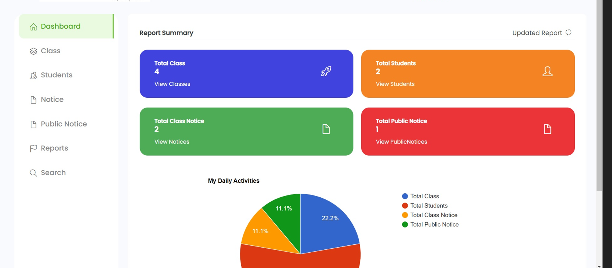

I'm a detail-oriented Software Test Engineer with a year of hands-on experience testing web applications — writing clear test cases from requirement specs, executing regression and functional suites, and working closely with developers to close bugs faster.
My foundation covers the SDLC/STLC, decision-table testing, and the basics of API testing, following ISTQB v4.0 standards and using Jira, Postman, and Selenium day to day.
Hands-on software testing experience focused on quality, traceability, and effective defect resolution.
Testing tools, technical foundations, and the standards I follow day to day.
Built, tested, and shipped end to end. Click a card to open the repository on GitHub.

Graduation project — an expert system that detects and diagnoses COVID-19 symptoms and recommends the nearest hospital based on patient location. Graded Excellent.
View repository ↗
Full-stack movie browsing application built with C# and ASP.NET Core — user authentication, category filtering, search, and a responsive UI.
View repository ↗
Java-based code quality analysis tool that scans projects, applies clean-code rules, and generates a console + HTML report for review.
View repository ↗
Console-based Java application managing students, instructors, courses, enrollments, and grades, with GPA calculation.
View repository ↗Open to QA roles, internships, and freelance testing work. Feel free to reach out — I usually reply within a day.